에너지관리기사 (2022-04-24 기출문제)
1과목: 연소공학
1. 세정 집진장치의 입자 포집원리에 대한 설명으로 틀린 것은?
- 액적에 입자가 충동하여 부착한다.
- 입자를 핵으로 한 증기의 응결에 의하여 응집성을 증가시킨다.
- 마립자의 확산에 의하여 액적과의 접촉을 좋게 한다.
- 배기의 습도 감소에 의하여 입자가 서로 응집한다.
(정답률: 49%)

2. 저위발열량 93766kI/Nm3의 C3H8을 공기비 1.2로 연소시킬 때 이론 연소온도는 약 몇 K인가? (단, 배기가스의 평균비열은 1.653kJ/Nm3ㆍK이고 다른 조건은 무시한다.)
- 1656
- 1756
- 1856
- 1956
(정답률: 31%)
3. 탄소(C) 84w%, 수소(H) 12w%, 수분 4w의 중량조성을 갖는 액체연료에서 수분을 완전히 제거한 다음 1시간당 5kg을 완전연소시키는데 필요한 이론공기량은 약 몇 Nm3/h인가?
- 55.6
- 65.8
- 73.5
- 89.2
(정답률: 31%)
4. 다음 체적비(%)의 코크스로 가스 1Nm3를 완전연소시키기 위하여 필요한 이론공기량은 약 몇 Nm3인가?
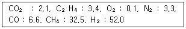
- 0.97
- 2.97
- 4.97
- 6.97
(정답률: 20%)
5. 표준 상태에서 메탄 1mol이 연소할 때 고위발열량과 저위발열량의 차이는 약 몇 kJ인가? (단, 물의 증발잠열은 44kJ/mol이다.)
- 42
- 68
- 76
- 88
(정답률: 34%)
6. 가연성 혼합 가스의 폭발한계 측정에 영향을 주는 요소로 가장 거리가 먼 것은?
- 온도
- 산소농도
- 점화에너지
- 용기의 두께
(정답률: 66%)
7. 가스폭발 위험 장소의 분류에 속하지 않은 것은?
- 제0종 위험장소
- 제1종 위험장소
- 제2종 위험장소
- 제3종 위험장소
(정답률: 43%)
8. 기계분(스토커) 화격자 중 연소하고 있는 석탄의 화층 위에 석탄을 기계적으로 산포하는 방식은?
- 횡입(쇄상)식
- 상입식
- 하입식
- 계단식
(정답률: 35%)
9. 중유를 연소하여 발생된 가스를 분석하였더니 체적비로 CO2는 14%, O2는 7%, N2는 79%이었다. 이 때 공기비는 약 얼마인가? (단, 연료에 질소는 포함하지 않는다.)
- 1.4
- 1.5
- 1.6
- 1.7
(정답률: 24%)
10. 일반적인 천연가스에 대한 설명으로 가장 거리가 먼 것은?
- 주성분은 메탄이다.
- 옥탄가가 높아 자동차 연료로 사용이 가능하다.
- 프로판가스보다 무겁다.
- LNG는 대기압 하에서 비등점이 -162℃인 액체이다.
(정답률: 39%)
11. 다음 중 일반적으로 연료가 갖추어야 할 구비조건이 아닌 것은?
- 연소 시 배출물이 많아야 한다.
- 저장과 운반이 편리해야 한다.
- 사용 시 위험성이 적어야 한다.
- 취급이 용이하고 안전하며 무해하여야 한다.
(정답률: 54%)
12. 코크스의 적정 고온 건류온도(℃)는?
- 500~600
- 1000~1200
- 1500~1800
- 2000~2500
(정답률: 44%)
13. 수소 4kg을 과잉공기계수 1.4의 공기로 완전 연소시킬 때 발생하는 연소가스 중의 산소량은 약 몇 kg인가?
- 3.20
- 4.48
- 6.40
- 12.8
(정답률: 24%)
14. 액화석유가스(LPG)의 성질에 대한 설명으로 틀린 것은?
- 인화폭발의 위험성이 크다.
- 상온, 대기압에서는 액체이다.
- 가스의 비중은 공기보다 무겁다.
- 기화잠열이 커서 냉각제로도 이용 가능하다.
(정답률: 31%)
15. 다음 대기오염 방지를 위한 집진장치 중 습식집진장치에 해당하지 않는 것은?
- 백필터
- 층진탑
- 벤투리 스크러버
- 사이클론 스크러버
(정답률: 29%)
16. 황(S) 1kg을 이론공기량으로 완전연소시켰을 때 발생하는 연소가스량은 약 몇 Nm3인가?
- 0.70
- 2.00
- 2.63
- 3.33
(정답률: 39%)
17. 대도시의 광화학 스모그(smog) 발생의 원인 물질로 문제가 되는 것은?
- NOX
- He
- CO
- CO2
(정답률: 41%)
18. 기체연료의 일반적인 특징으로 틀린 것은?
- 연소효율이 높다.
- 고온을 얻기 쉽다.
- 단위 용적당 발열량이 크다.
- 누출되기 쉽고 폭발의 위험성이 크다.
(정답률: 43%)
19. 다음 반응식으로부터 프로판 1kg의 발열량은 약 몇 Mj인가?
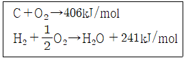
- 33.1
- 40.0
- 49.6
- 65.8
(정답률: 29%)
20. 석탄, 코크스, 목재 등을 직열상태로 가열하고, 공기로 불완전 연소시켜 얻는 연료는?
- 천연가스
- 수성가스
- 발생로가스
- 오일가스
(정답률: 44%)
2과목: 열역학
21. 다음 중 물의 임계압력에 가장 가까운 값은?
- 1.03 kPa
- 100 kPa
- 22 kPa
- 63 kPa
(정답률: 27%)
22. 27℃, 100kPa에 있는 이상기체 1kg을 700 kPa까지 가역 단열압축 하였다. 이 때 소요된 일의 크기는 몇 kJ인가? (단, 이 기체의 비열비는 1.4, 기체상수는 0.287 kJ/kgㆍK이다.)
- 100
- 160
- 320
- 400
(정답률: 29%)
23. “PVn=일정”인 과정에서 밀폐계가 하는 일을 나타낸 것은? (단, P는 압력, V는 부피, n은 상수이며, 첨자 1, 2는 각각 과정 전ㆍ후 상태를 나타낸다.)
- P2V2-P1V1
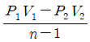
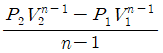
- P1V1n(V2-V1)
(정답률: 32%)
24. 압력 1MPa인 포화액의 비체적 및 비엔탈피는 각각 0.0012m3/kg, 762.8kJ/kg이고, 포화증기의 비체적 및 비엔탈피는 각각 0.1944m3/kg, 2778.1kJ/kg이다. 이 압력에서 건도가 0.7인 습증기의 단위 질량당 내부에너지는 약 몇 kJ/kg인가?
- 2037.1
- 2173.8
- 2251.3
- 2393.5
(정답률: 16%)
25. 냉동능력을 나타내는 단위로 0℃의 물 1000kg을 24시간 동안에 0℃의 얼음으로 만드는 능력을 무엇이라 하는가?
- 냉동계수
- 냉동마력
- 냉동톤
- 냉동률
(정답률: 32%)
26. 압축비가 5인 오토 사이클기관이 있다. 이 기관이 15~1500℃의 온도범위에서 작동할 때 최고압력은 약 몇 kPa인가? (단, 최저압력은 100kPa, 비열비는 1.4이다.)
- 3090
- 2650
- 1961
- 1247
(정답률: 24%)
27. 온도 30℃, 압력 350kPa에서 비체적이 0.449m3/kg인 이상기체의 기체상수는 약 몇 kJ/kgㆍK인가?
- 0.143
- 0.287
- 0.518
- 0.842
(정답률: 23%)
28. 브레이튼 사이클의 이론 열효율을 높일 수 있는 방법으로 틀린 것은?
- 공기의 비열비를 감소시킨다.
- 터빈에서 배출되는 공기의 온도를 낮춘다.
- 연소기로 공급되는 공기의 온도를 낮춘다.
- 공기압축기의 압력비를 증가시킨다.
(정답률: 16%)
29. 다음 중 이상적인 랭킨 사이클의 과정으로 옳은 것은?
- 단열압축→정적가열→단열팽창→정압방열
- 단열압축→정압가열→단열팽창→정적방열
- 단열압축→정압가열→단열팽창→정압방열
- 단열압축→정적가열→단열팽창→정적방열
(정답률: 32%)
30. 열역학 제1법칙을 설명한 것으로 옳은 것은?
- 절대 영도 즉 0K에는 도달할 수 없다.
- 흡수한 열을 전부 일로 바꿀 수는 없다.
- 열을 일로 변환할 때 또는 일을 열로 변환할 때 전체 계의 에너지 총량은 변하지 않고 일정하다.
- 제3의 물체와 열평형에 있는 두 물체는 그들 상호간에도 열평형에 있으며, 물체의 온도는 서로 같다.
(정답률: 35%)
31. 냉매가 구비해야 할 조건 중 틀린 것은?
- 증발열이 클 것
- 비체적이 작을 것
- 임계온도가 높을 것
- 비열비가 클 것
(정답률: 8%)
32. 성능계수가 4.3인 냉동기가 1시간 동안 30MJ의 열을 흡수한다. 이 냉동기를 작동하기 위한 동력은 약 몇 kW인가?
- 0.25
- 1.94
- 6.24
- 10.4
(정답률: 34%)
33. 단열 밀폐되어 있는 탱크 A, B가 밸브로 연결되어 있다. 두 탱크에 들어있는 공기(이상기체)의 질량은 같고, A탱크의 체적은 B탱크 체적의 2배, A탱크의 압력은 200kPa, B탱크의 압력은 100kPa이다. 밸브를 열어서 평형이 이루어진 후 최종 압력은 약 몇 kPa인가?
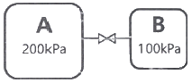
- 120
- 133
- 150
- 167
(정답률: 29%)
34. 한 과학자가 자기가 만든 열기관이 80℃와 10℃ 사이에서 작동하면서 100kJ의 열을 받아 20kJ의 유용한 일을 할 수 있다고 주장한다. 이 주장에 위배되는 열역학 법칙은?
- 열역학 제0법칙
- 열역학 제1법칙
- 열역학 제2법칙
- 열역학 제3법칙
(정답률: 41%)
35. 랭킨 사이클로 작동하는 증기 동력 사이클에서 효율을 높이기 위한 방법으로 거리가 먼 것은?
- 복수기(응축기)에서의 압력을 상승시킨다.
- 터빈 입구의 온도를 높인다.
- 보일러의 압력을 상승시킨다.
- 재열 사이클(reheat cycle)로 운전한다.
(정답률: 20%)
36. CH4의 기체상수는 약 몇 kJ/kgㆍㆍ인가?
- 3.14
- 1.57
- 0.83
- 0.52
(정답률: 12%)
37. 압력 300kPa인 이상기체 150kg이 있다. 온도를 일정하게 유지하면서 압력을 100kPa로 변화시킬 때 엔트로피 변화는 약 몇 kJ/K인가? (단, 기체의 정적비열은 1.735kJ/kgㆍK, 비열비는 1.299이다.)
- 62.7
- 73.1
- 85.5
- 97.2
(정답률: 32%)
38. 밀폐계가 300kPa의 압력을 유지하면서 체적이 0.2m3에서 0.4m3로 증가하였고 이 과정에서 내부에너지는 20kJ 증가하였다. 이 때 계가 받은 열량은 약 몇 kJ인가?
- 9
- 80
- 90
- 100
(정답률: 43%)
39. 그림에서 이상기체를 A에서 가역적으로 단열압축시킨 후 정적과정으로 C까지 냉각시키는 과정에 해당되는 것은?
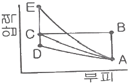
- A - B - C
- A - C
- A - D - C
- A - E - C
(정답률: 29%)
40. 다음 식 줒ㅇ 이상기체 상태에서의 가역 단열과정을 나타내는 식으로 옳지 않은 것은? (단, P, T, V, k는 각각 압력, 온도, 부피, 비열비이고, 아래 첨자 1, 2는 과정 전ㆍ후를 나타낸다.
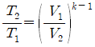
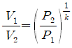
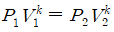
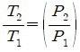
(정답률: 23%)
3과목: 계측방법
41. 링밸런스식 압력계에 대한 설명으로 옳은 것은?
- 도압관은 가늘고 긴 것이 좋다.
- 측정 대상 유체는 주로 액체이다.
- 계기를 압력원에 가깝게 설치해야 한다.
- 부식성 가스나 습기가 많은 곳에서도 정밀도가 좋다.
(정답률: 31%)
42. 다음과 같이 자동제어에서 응답속도를 빠르게하고 외란에 대해 안정적으로 제어하려 한다. 이 때 추가해야할 제어 동작은?
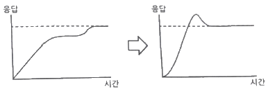
- 다위치동작
- P동작
- I동작
- D동작
(정답률: 27%)
43. 가스 온도를 열전대 온도계를 사용하여 측정할 때 주의해야 할 사항이 아닌 것은?
- 열전대는 측정하고자 하는 곳에 정확히 삽입하며 삽입된 구멍에 냉기가 들어가지 않게 한다.
- 주위의 고온체로부터의 복사열의 영향으로 인한 오차가 생기지 않도록 해야 한다.
- 단자와 보상도선의 +, -를 서로 다른 기호끼리 연결하여 감온부의 열팽창에 의한 오차가 발생하지 않도록 한다.
- 보호관의 선택에 주의한다.
(정답률: 45%)
44. 다음 중에서 측온저항체로 사용되지 않는 것은?
- Cu
- Ni
- Pt
- Cr
(정답률: 27%)
45. 다음 중 용적식 유량계에 해당하는 것은?
- 오리피스미터
- 습식가스미터
- 로터미터
- 피토관
(정답률: 20%)
46. 측정온도범위가 약 0~700℃정도이며, (-)측이 콘스탄탄으로 구성된 열전대는?
- J형
- R형
- K형
- S형
(정답률: 35%)
47. 측온 저항체에 큰 전류가 흐를 때 중열에 의해 측정하고자 하는 온도보다 높아지는 현상인 자기가열(自己加熱) 현상이 있는 온도계는?
- 열전대 온도계
- 압력식 온도계
- 서미스터 온도계
- 광고온계
(정답률: 20%)
48. 중유를 사용하는 보일러의 배기가스를 오르자트 가스분석계의 가스뷰렛에 시료 가스량을 50mL채취하였다. CO2 흡수피펫을 통과한 후 가스뷰렛에 남은 시료는 44mL이었고, O2 흡수피펫에 통과한 후에는 41.8mL, CO2 흡수피펫에 통과한 후 남은 시료량은 41.4mL이었다. 배기가스 중에 CO2, O2, CO는 각각 몇 vol%인가?
- 6, 2.2, 0.4
- 12, 4.4, 0.8
- 15, 6.4, 1.2
- 18, 7.4, 1.8
(정답률: 43%)
49. 세라믹(ceramic)식 O2 계의 세라믹 주원료는?
- Cr2O3
- Pb
- P2O5
- ZrO2
(정답률: 34%)
50. 국제단위계(SI)에서 길이의 설명으로 틀린 것은?
- 기본단위이다.
- 기호는 m이다.
- 명칭은 미터이다.
- 소리가 진공에서 1/229792458초 동안 진행한 경로의 길이이다.
(정답률: 52%)
51. 오벌(oval)식 유량계로 유량을 측정할 때 지시값의 오차 중 히스테리시스 차의 원인이 되는 것은?
- 내부 기어의 마모
- 유체의 압력 및 점성
- 측정자의 눈의 위치
- 온도 및 습도
(정답률: 24%)
52. 다음 중 압전 저항효과를 이용한 압력계는?
- 액주형 압력계
- 아네로이드 압력계
- 박막식 압력계
- 스트레인게이지식 압력계
(정답률: 47%)
53. 가스분석계에서 연소가스 분석 시 비중을 이용하여 가장 측정이 용이한 기체는?
- NO2
- O2
- CO2
- H2
(정답률: 36%)
54. 전자유량계에서 안지름이 4cm인 파이프에 3L/s의 액체가 흐르고, 자속밀도 1000gauss의 평등자계 내에 있다면 이 때 검출되는 전압은 약 mV인가? (단, 자속분포의 수정 계수는 1이고, 액체의 비중은 1이다.)
- 5.5
- 7.5
- 9.5
- 11.5
(정답률: 34%)
55. 액주형 압력계 중 경사관식 압력계의 특정에 대한 설명으로 옳은 것은?
- 일반적으로 U자관보다 정밀도가 낮다.
- 눈금을 확대하여 읽을 수 있는 구조이다.
- 통풍계로는 사용할 수 없다.
- 미세압 측정이 불가능하다.
(정답률: 32%)
56. 자동제어에서 비례동작에 대한 설명으로 옳은 것은?
- 조작부를 측정값의 크기에 비례하여 움직이게 하는 것
- 조작부를 편차의 크기에 비례하여 움직이게 하는 것
- 조작부를 목표값의 크기에 비례하여 움직이게 하는 것
- 조작부를 외란의 크기에 비례하여 움직이게 하는 것
(정답률: 39%)
57. 흡착제에서 관을 통해 각각 기체의 독자적인 이동속도에 의해 분리시키는 방법으로, CO2, CO, N2, H2, CH4 등을 모두 분석할 수 있어 분리 능력과 선택성이 우수한 가스분석계는?
- 밀도법
- 기체크로마토그래피법
- 세라믹법
- 오르자트법
(정답률: 29%)
58. 보일러의 자동제어에서 인터록 제어의 종류가 아닌 것은?
- 고온도
- 저연소
- 불착화
- 압력초과
(정답률: 26%)
59. 광고온계의 특징에 대한 설명으로 옳은 것은?
- 비접촉식 온도 측정법 중 가장 정밀도가 높다.
- 넓은 특정온도(0~3000℃) 범위를 갖는다.
- 측정이 자동적으로 이루어져 개인오차가 발생하지 않는다.
- 방사온도계에 비하여 방사율에 대한 보정량이 크다.
(정답률: 26%)
60. 열전대 온도계의 보호관으로 석영관을 사용하였을 때의 특징으로 틀린 것은?
- 급냉, 급열에 잘 견딘다.
- 기계적 충격에 약하다.
- 산성에 대하여 약하다.
- 알칼리에 대하여 약하다.
(정답률: 31%)
4과목: 열설비재료 및 관계법규
61. 다음은 보일러의 급수밸브 및 체크밸브 설치기준에 관한 설명이다. ()안에 알맞은 것은?
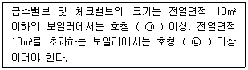
- ㉠ 5A, ㉡ 10A
- ㉠ 10A, ㉡ 15A
- ㉠ 15A, ㉡ 20A
- ㉠ 20A, ㉡ 30A
(정답률: 40%)
62. 에너지이용 합리화법령상 에너지사용계획을 수립하여 산업통상자원부장관에게 제출하여야 하는 공공사업주관자의 설치 시설 기준으로 옳은 것은?
- 연간 2천5백 티오이 이상의 연료 및 열을 사용하는 시설
- 연간 5천 티오이 이상의 연료 및 열을 사용하는 시설
- 연간 2천5백만 킬로와트시 이상의 전력을 사용하는 시설
- 연간 5천만 킬로와트시 이상의 전력을 사용하는 시설
(정답률: 29%)
63. 에너지이용 합리화법령에 따라 에너지관리산업기사 자격을 가진 자는 관리가 가능하나, 에너지관리기능사 자격을 가진 자는 관리할 수 없는 보일러 용량의 범위는?
- 5t/h 초과 10t/h 이하
- 10t/h 초과 30t/h 이하
- 20t/h 초과 40t/h 이하
- 30t/h 초과 60t/h 이하
(정답률: 38%)
64. 터널가마의 일반적인 특징이 아닌 것은?
- 소성이 균일하여 제품의 품질이 좋다.
- 온도조절의 자동화가 쉽다.
- 열효율이 좋아 연료비가 절감된다.
- 사용연료의 제한을 받지 않고 전력소비가 적다.
(정답률: 39%)
65. 점토질 단열재의 특징으로 틀린 것은?
- 내스폴링성이 작다.
- 노벽이 얇아져서 노의 중량이 적다.
- 내화재와 단열재의 역할을 동시에 한다.
- 안전사용온도는 1300~1500℃ 정도이다.
(정답률: 24%)
66. 에너지이용 합리화법령상 에너지다소비 사업자는 산업통상자원부령으로 정하는 바에 따라 에너지사용기자재의 현황을 매년 언제까지 시ㆍ도지사에게 신고하여야 하는가?
- 12월 31일까지
- 1월 31일까지
- 2월 말까지
- 3월 31일까지
(정답률: 44%)
67. 글로브밸브(globe valve)에 대한 설명으로 틀린 것은?
- 밸브 디스크 모양은 평면형, 반구형, 원뿔형, 반원형이 있다.
- 유체의 흐름방향이 밸브 몸통 내부에서 변한다.
- 디스크 형상에 따라 앵글밸브, Y형밸브, 니들밸브 등으로 분류된다.
- 조작력이 적어 고압의 대구경 밸브에 적합하다.
(정답률: 31%)
68. 에너지법령에 의한 에너지 총조사는 몇 년 주기로 시행하는가? (단, 간이조사는 제외한다.)
- 2년
- 3년
- 4년
- 5년
(정답률: 47%)
69. 캐스터블 내화물의 특징이 아닌 것은?
- 소성할 필요가 없다.
- 접합부 없이 노체를 구축할 수 있다.
- 사용 현장에서 필요한 형상으로 성형할 수 있다.
- 온도의 변동에 따라 스폴링을 일으키기 쉽다.
(정답률: 31%)
70. 다음 중 보냉재가 구비해야 할 조건이 아닌 것은?
- 탄력성이 있고 가벼워야 한다.
- 흡수성이 적어야 한다.
- 열전도율이 적어야 한다.
- 복사열의 투과에 대한 저항성이 없어야 한다.
(정답률: 16%)
71. 열팽창에 의한 배관의 측면 이동을 구속 또는 제한하는 장치가 아닌 것은?
- 앵커
- 스토퍼
- 브레이스
- 가이드
(정답률: 36%)
72. 다음 중 에너지이용 합리화법령에 따라 에너지다소비사업자에게 에너지관리 개선명령을 할 수 있는 경우는?
- 목표원단위보다 과다하게 에너지를 사용하는 경우
- 에너지관리지도 결과 10% 이상의 에너지효율 개선이 기대되는 경우
- 에너지 사용실적이 전년도보다 현저히 증가한 경우
- 에너지 사용계획 승인을 얻지 아니한 경우
(정답률: 32%)
73. 에너지이용 합리화법령에 따라 에너지사용계획에 대한 검토결과 공공사업주관자가 조치 요철을 받은 경우, 이를 이행하기 위하여 제출하는 이행계획에 포함되어야 할 내용이 아닌 것은? (단, 산업통상자원부장관으로부터 요청 받은 조치의 내용은 제외한다.)
- 이행 주체
- 이행 방법
- 이행 장소
- 이행 시기
(정답률: 31%)
74. 도염식요는 조업방법에 의해 분류할 경우 어떤 형식인가?
- 불연속식
- 반연속식
- 연속식
- 불연속식과 연속식과 절충형식
(정답률: 31%)
75. 에너지이용 합리화법에 따라 산업통상자원부장관이 국내외 에너지 사정의 변동으로 에너지 수급에 중대한 차질이 발생될 결루 수급안정을 위해 취할 수 있는 조치 사항이 아닌 것은?
- 에너지의 배급
- 에너지의 비축과 저장
- 에너지의 양도ㆍ양수의 제한 또는 금지
- 에너지 수급의 안정을 위하여 산업통상자원부령으로 정하는 사항
(정답률: 31%)
76. 에너지이용 합리화법령에 따라 효율관리기자재의 제조업자는 효율관리시험기관으로부터 측정 결과를 통보받은 날부터 며칠 이내에 그 측정 결과를 한국에너지공단에 신고하여야 하는가?
- 15일
- 30일
- 60일
- 90일
(정답률: 43%)
77. 에너지이용 합리화법령에 따라 산업통상자원부장관이 위생 접객업소 등에 에너지사용의 제한 조치를 할 때에는 며칠 이전에 제한 내용을 예고하여야 하는가?
- 7일
- 10일
- 15일
- 20일
(정답률: 31%)
78. 에너지이용 합리화법상 에너지다소비사업자의 신고와 관련하여 다음 ()에 들어갈 수 없는 것은? (단, 대통령령은 제외한다.)
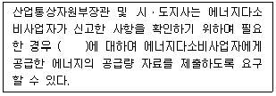
- 한국전력공사
- 한국가스공사
- 한국가스안전공사
- 한국지역난방공사
(정답률: 40%)
79. 다음 보온재 중 재질이 유기질 보온재에 속하는 것은?
- 우레탄폼
- 펄라이트
- 세라믹 파이버
- 규산칼슘 보온재
(정답률: 39%)
80. 다음 중 제강로가 아닌 것은?
- 고로
- 전로
- 평로
- 전기로
(정답률: 35%)
5과목: 열설비설계
81. 급수처리 방법 중 화학적 처리방법은?
- 이온교환법
- 가열연화법
- 증류법
- 여과법
(정답률: 32%)
82. 서로 다른 고체 물질 A, B, C인 3개의 평판이 서로 밀착되어 복합체를 이루고 있다. 젖상 상태에서의 온도 분포가 [그림]과 같을 때, 어느 물질의 열전도도가 가장 적은가? (단, 온도 T1=1000℃, T2=800℃, T3=550℃, T4=250℃ 이다.)
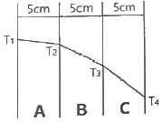
- A
- B
- C
- 모두 같다.
(정답률: 47%)
83. 다음 중 사이폰관이 직접 부착된 장치는?
- 수면계
- 안전밸브
- 압력계
- 어큐물레이터
(정답률: 29%)
84. 파이프 내경 D(mm)를 유량 Q(m3/s)와 평균속도 C(m/s)로 표시한 식으로 옳은 것은?
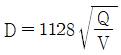
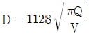
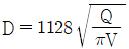
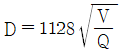
(정답률: 39%)
85. 수관 보일러와 비교한 원통 보일러의 특징에 대한 설명으로 틀린 것은?
- 구조상 고압용 및 대용량에 적합하다.
- 구조가 간단하고 취급이 비교적 용이하다.
- 전열면적당 수부의 크기는 수관보일러에 비해 크다.
- 형상에 비해서 전열면적이 작고 열효율은 낮은 편이다.
(정답률: 24%)
86. 보일러의 강도 계산에서 보일러 동체 속에 압력이 생기는 경우 원주방향의 응력은 축방향 응력의 몇 배 정도인가? (단, 동체 두께는 매우 얇다고 가정한다.)
- 2배
- 4배
- 8배
- 16배
(정답률: 27%)
87. 다음 중 특수열매체 보일러에서 가열 유체로 사용되는 것은?
- 폴리아미드
- 다우섬
- 덱스트린
- 에스테르
(정답률: 44%)
88. 다음 중 보일러 안정장치로 가장 거리가 먼 것은?
- 방폭문
- 안전밸브
- 체크밸브
- 고저수위경보기
(정답률: 35%)
89. 보일러의 만수보존법에 대한 설명으로 틀린 것은?
- 밀폐 보존방식이다.
- 겨울철 동결에 주의하여야 한다.
- 보통 2~3개월의 단기보존에 사용된다.
- 보일러 수는 pH6 정도 유지되도록 한다.
(정답률: 43%)
90. 유체의 압력손실에 대한 설명으로 틀린 것은? (단, 관마찰계수는 일정하다.)
- 유체의 점성으로 인해 압력손실이 생긴다.
- 압력손실은 유속의 제곱에 비례한다.
- 압력손실은 관의 길에에 반비례한다.
- 압력손실은 관의 내경에 반비레한다.
(정답률: 35%)
91. 다음 중 고압보일러용 탈산소제로서 가장 적합한 것은?
- (C6H10O5)n
- Na2SO3
- N2H4
- NaHSO3
(정답률: 34%)
92. 인젝터의 특징으로 틀린 것은?
- 급수온도가 높으면 작동이 불가능하다.
- 소형 저압보일러용으로 사용된다.
- 구조가 간단하다.
- 열효율은 좋으나 별도의 소요 동력이 필요하다.
(정답률: 31%)
93. 일반적인 주철제 보일러의 특징으로 적절하지 않은 것은?
- 내식성이 좋다.
- 인장 및 충격에 강하다.
- 복잡한 구조라도 제작이 가능하다.
- 좁은 장소에서도 설치가 가능하다.
(정답률: 31%)
94. 프라이밍 및 포밍 발생 시 조치사항에 대한 설명으로 틀린 것은?
- 안전밸브를 전개하여 압력을 강하시킨다.
- 증기 취출을 서서히 한다.
- 연소량을 줄인다.
- 수위를 안정시킨 후 보일러수의 농도를 낮춘다.
(정답률: 29%)
95. 이온 교환체에 의한 경수의 연화 원리에 대한 설명으로 옳은 것은?
- 수지의 성분과 Na형의 양이온과 결합하여 경도성분 제거
- 산소 원자와 수지가 결합하여 경도성분 제거
- 물속의 음이온과 양이온이 동시에 수지와 결합하여 경도성분 제거
- 수지가 물속의 모든 이물질과의 결합하여 경도성분 제거
(정답률: 32%)
96. 수관 1개의 길이가 2200mm, 수관의 내경이 60mm, 수관의 두께가 4mm인 수관 100개를 갖는 수관 보일러의 전열면적은 약 몇 m2인가?
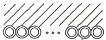
- 42
- 47
- 52
- 57
(정답률: 49%)
97. 방사 과열기에 대한 설명 중 틀린 것은?
- 주로 고온, 고압 보일러에서 접촉 과열기와 조합해서 사용한다.
- 화실의 천장부 또는 노벽에 설치한다.
- 보일러 부하와 함께 등기온도가 상승한다.
- 과열온도의 변동을 적게 하는데 사용된다.
(정답률: 20%)
98. 내압을 받는 어떤 원통형 탱크의 압력이 0.3MPa, 직경이 5m, 강판 두께가 10mm이다. 이 탱크의 이음 효율을 75%로 할 때, 강판의 인장응력(N/mm2)는 얼마인가? (단, 탱크의 반경방향으로 두께에 응력이 유기되지 않는 이론값을 계산한다.)
- 200
- 100
- 20
- 10
(정답률: 43%)
99. 물을 사용하는 설비에서 부식을 초래하는 인자로 가장 거리가 먼 것은?
- 용존 산소
- 용존 탄산가스
- pH
- 실리카
(정답률: 43%)
100. 보일러의 모리슨형 파형노통에서 노통의 최소 안지름이 950mm, 최고사용압력을 1.1MPa이라 할 때 노통의 최소두께는 몇 mm인가? (단, 평형부 길이가 230mm미만이며, 상수 C는 1100이다.)
- 5
- 8
- 10
- 13
(정답률: 29%)